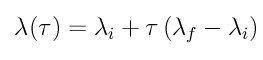

fix ti/rs command¶
Syntax¶
fix ID group-ID ti/rs lambda_initial lambda_final t_switch t_equil keyword value ...
- ID, group-ID are documented in fix command
- ti/rs = style name of this fix command
- lambda_initial/lambda_final = initial/final values of the coupling parameter
- t_switch/t_equil = number of steps of the switching/equilibration procedure
- keyword = function
function value = function-ID function-ID = ID of the switching function (1, 2 or 3)
Example:
fix ref all ti/rs 50.0 2000 1000
fix vf vacancy ti/rs 10.0 70000 50000 function 2
Description¶
This fix allows you to compute the free energy temperature dependence by performing a thermodynamic integration procedure known as Reversible Scaling (de Koning99, de Koning00a). The thermodynamic integration is performed using the nonequilibrium method of Adiabatic Switching (Watanabe, de Koning96).
The forces on the atoms are dynamically scaled during the simulation, the rescaling is done in the following manner:

where F_int is the total force on the atoms due to the interatomic potential and lambda is the coupling parameter of the thermodynamic integration.
The fix acts as follows: during the first t_equil steps after the fix is defined the value of lambda is lambda_initial , this is the period to equilibrate the system in the lambda = lambda_initial state. After this the value of lambda changes continuously from lambda_initial to lambda_final according to the function defined using the keyword function (described below), this is done in t_switch steps. Then comes the second equilibration period of t_equil to equilibrate the system in the lambda = lambda_final state. After that the switching back to the lambda = lambda_initial state is done using t_switch timesteps and following the same switching function. After this period the value of lambda is kept equal to lambda_initial indefinitely or until a unfix erase the fix.
The description of thermodynamic integration in both directions is done in de Koning00b, the main reason is to try to eliminate the dissipated heat due to the nonequilibrium process.
The function keyword allows the use of three different switching rates. The option 1 results in a constant rescaling where the lambda parameter changes at a constant rate during the switching time according to the switching function
where tau is the scaled time variable t/t_switch. This switching function has the characteristic that the temperature scaling is faster at temperatures closer to the final temperature of the procedure. The option number 2 performs the switching at a rate defined by the following switching function

This switching function has the characteristic that the temperature scaling occurs at a constant rate during all the procedure. The option number 3 performs the switching at a rate defined by the following switching function

This switching function has the characteristic that the temperature scaling is faster at temperatures closer to the initial temperature of the procedure.
An example script using this command is provided in the examples/USER/misc/ti directory.
Restart, fix_modify, output, run start/stop, minimize info¶
No information about this fix is written to binary restart files.
This fix computes a global vector quantitie which can be accessed by various output commands. The vector has 2 positions, the first one is the coupling parameter lambda and the second one is the time derivative of lambda. The scalar and vector values calculated by this fix are “extensive”.
No parameter of this fix can be used with the start/stop keywords of the run command.
The forces due to this fix are imposed during an energy minimization, invoked by the minimize command.
Restrictions¶
This command is part of the USER-MISC package. It is only enabled if LAMMPS was built with those packages. See the Making LAMMPS section for more info.
Default¶
The keyword default is function = 1.
(de Koning 99) M. de Koning, A. Antonelli and S. Yip, Phys Rev Lett, 83, 3973 (1999).
(Watanabe) M. Watanabe and W. P. Reinhardt, Phys Rev Lett, 65, 3301 (1990).
(de Koning 96) M. de Koning and A. Antonelli, Phys Rev E, 53, 465 (1996).
(de Koning 00a) M. de Koning, A. Antonelli and S. Yip, J Chem Phys, 115, 11025 (2000).
(de Koning 00b) M. de Koning et al., Computing in Science & Engineering, 2, 88 (2000).